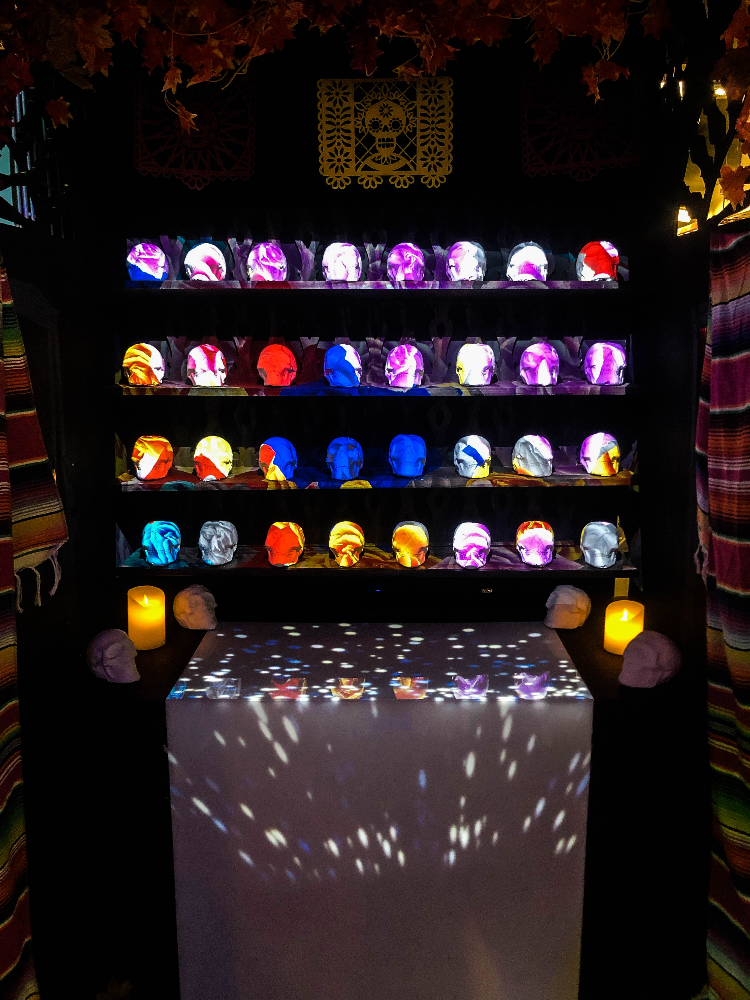
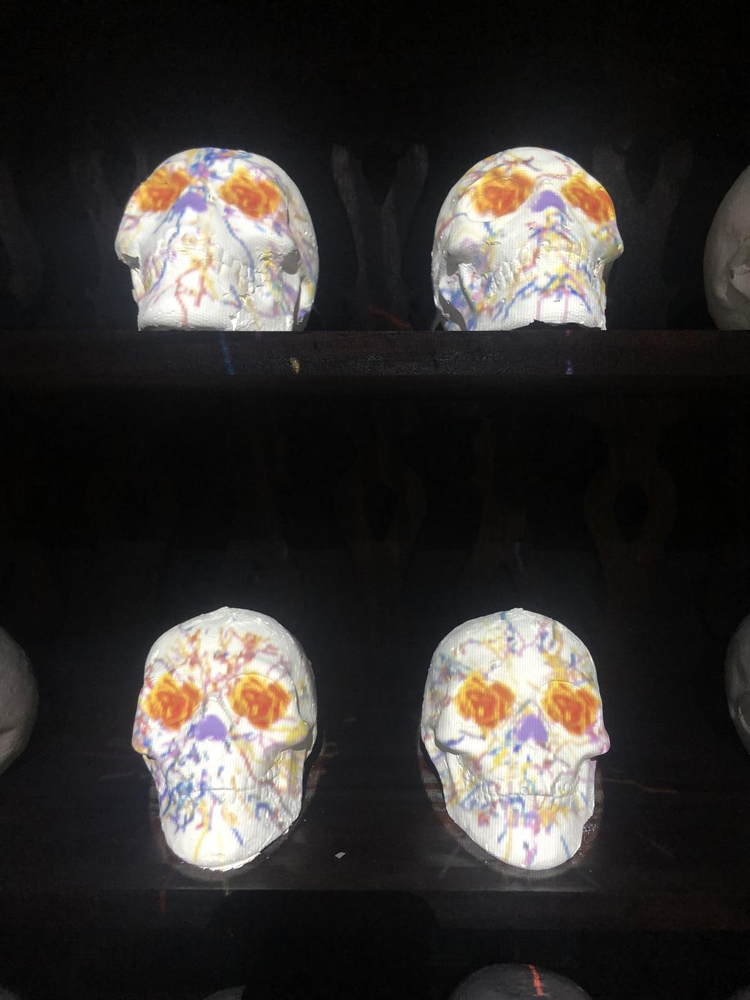
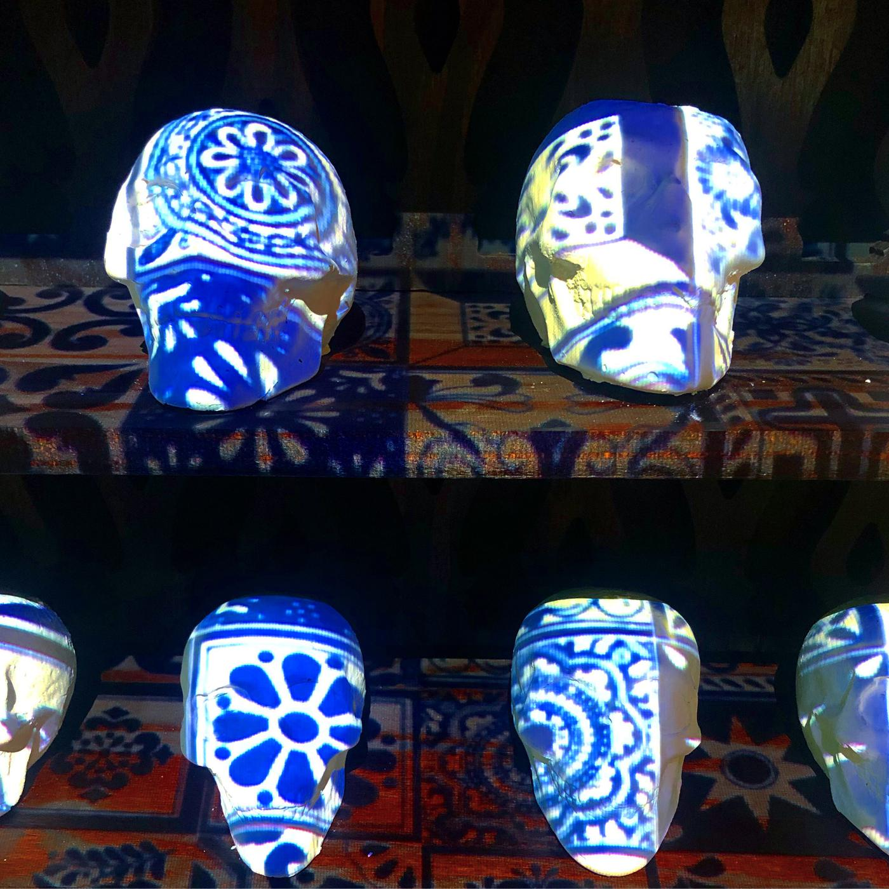
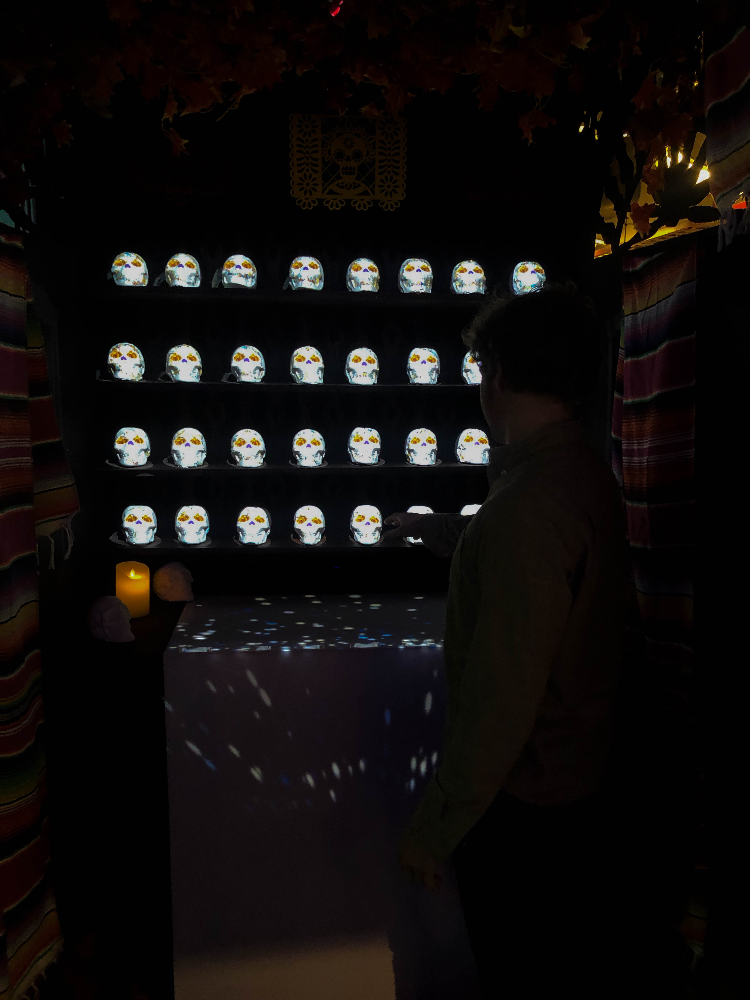

¿Cómo puede la tecnología influir en las celebraciones culturales? // How can technology influence cultural celebrations? This project started at the MIT Media Lab, check it out here.
 Ofrenda Digital is a Digitally Augmented Physical Shrine. It utilizes dynamic projection mapping to bring a layer of dynamic information and animations to a physical ofrenda as seen in Día de Muertos. This project immerses the user in Día de Muertos and the Spanish language. Users can interactive with a variety of data driven narratives from celebrations across Mexico. Utilizing data from media across Mexico we can generate digital faces and designs around this celebration.
 Each location brings up new media and context, along with generative faces. These faces are generated using a conditional styleGAN based off the photos in this area and colors generated by an archival color quantization method. Along with being an exploratory tool, Ofrenda Digital is also an archival tool. It not only archives information from the celebration, but users can utilize it as a more traditional ofrenda. Its digital overlay structure can take in digital and physical media from users in a unique profile.
Ofrenda Digital seeks to improve and apply technologies to preservation of cultural tradition as well as conversations around loss. This project is motivated by the fact that as mass migration and social and climate instability occur, these types of traditions linked to physical shrines and public spaces come under threat. Furthermore, this project seeks to bring new layers of technology and deepen the conversation around this celebration and Latinidad.